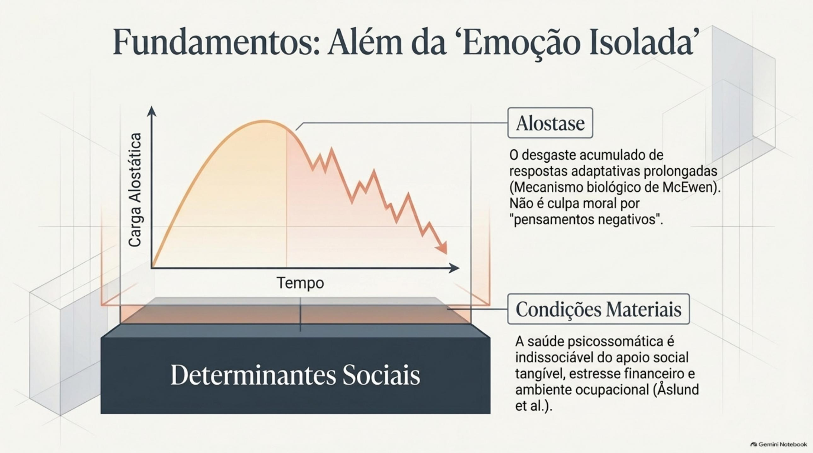
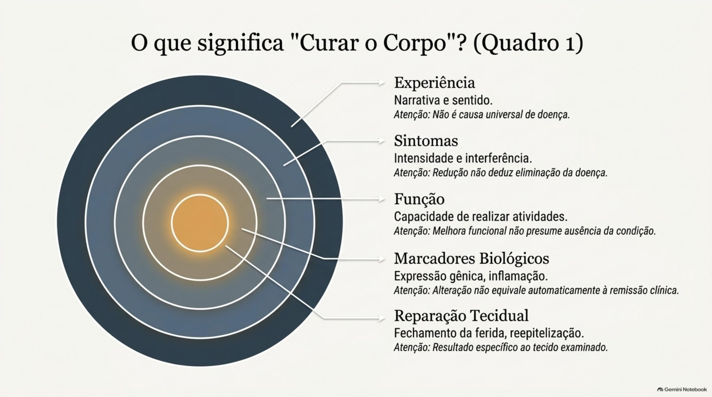
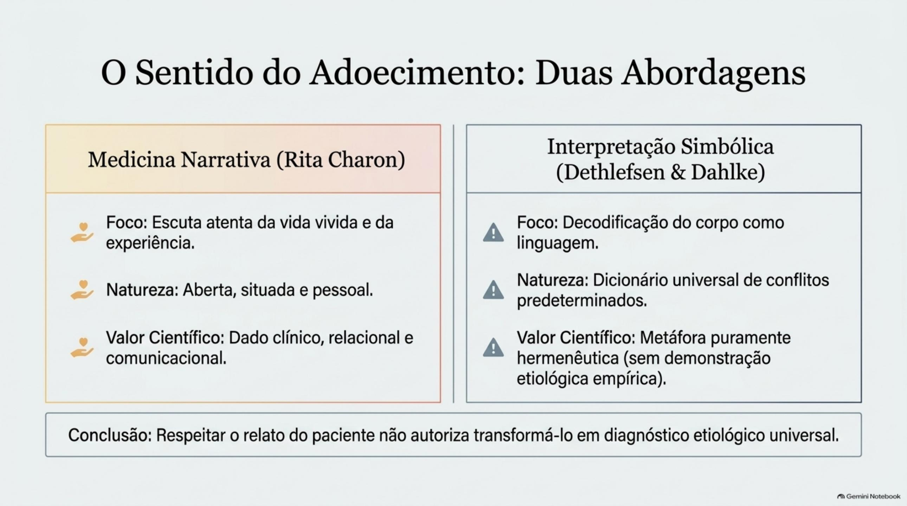
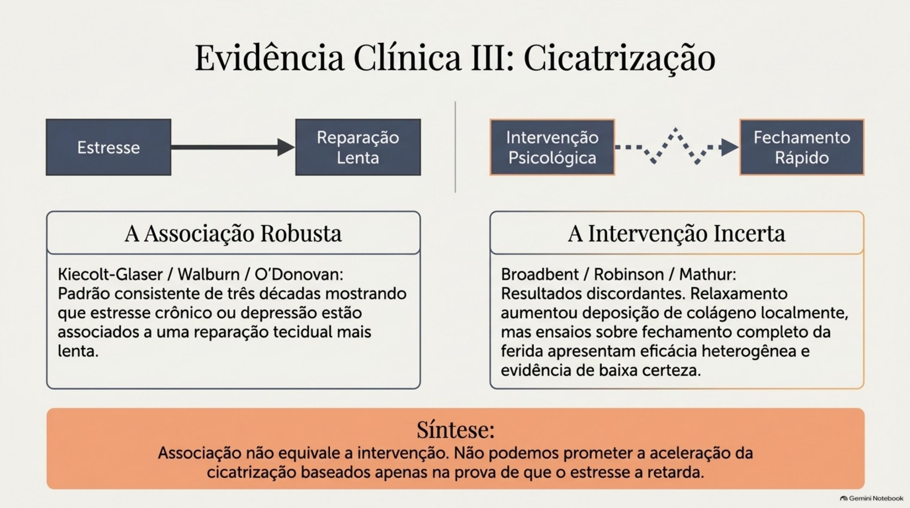
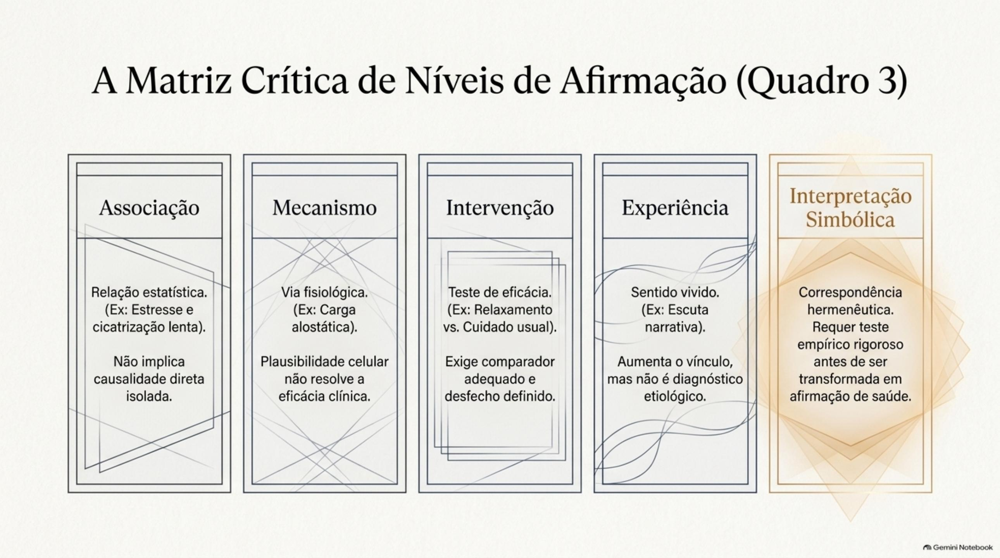

Do que trata o artigo
A participação de processos psicológicos na recuperação física é um problema central da Psicologia da Saúde, mas permanece sujeita a interpretações causais excessivas. O artigo examina estresse, experiências emocionais, intervenções psicológicas e desfechos corporais, a partir de um acervo de 100 textos em acesso aberto reunidos na Europe PMC em 21 de setembro de 2026.
Abaixo, os objetivos do artigo e os tópicos centrais. Clique em cada tópico para ver a explicação e a reflexão que ele abre.
Objetivos do artigo
Objetivo principal
Analisar criticamente mecanismos, associações, experiências e resultados clínicos relacionados às relações mente-corpo, respondendo: de que maneira processos e intervenções psicológicas podem contribuir para a recuperação física — e quais limites as evidências impõem a essa contribuição?
Objetivos secundários
- Propor um modo de discutir interpretações simbólicas sem desqualificar a experiência do paciente nem abandonar os padrões de precisão da pesquisa científica.
- Decompor a expressão "cura do corpo" em resultados verificáveis: alívio de sintomas, recuperação funcional, qualidade de vida, marcadores fisiológicos e reparação tecidual.
- Examinar criticamente as evidências sobre estresse e cicatrização, atenção plena e dor crônica, e intervenções em sintomas gastrointestinais.
- Organizar o debate por níveis de afirmação — associação, mecanismo, intervenção, experiência e interpretação simbólica — mantendo cada conclusão proporcional ao desenho do estudo.
Fundamentos: estresse, adaptação e condições sociais
O corpo responde ao mundo — mas nenhuma emoção isolada explica uma doença.

Respostas de estresse podem ser adaptativas; o problema é a ativação repetida, a recuperação insuficiente ou a resposta desproporcional.
O conceito de alostase descreve a estabilidade alcançada por mudanças adaptativas; a carga alostática designa o custo acumulado de respostas prolongadas ou desreguladas. Esse modelo permite investigar mecanismos sem presumir que todo adoecimento nasce de um conflito emocional.
O desgaste corporal resulta de interações entre sistemas — não do efeito de uma emoção isolada.
O organismo integra avaliação da situação, aprendizagem, sono, hábitos, ambiente, suporte social e condições econômicas.
Atribuir a alguém responsabilidade moral por sua doença porque 'não controlou os pensamentos' é uma conclusão sem base adequada e potencialmente danosa. O sofrimento psicológico precisa ser investigado junto com esses fatores, não no lugar deles.
Culpar a pessoa adoecida pela própria doença é uma falácia com consequências clínicas e éticas reais.
A proximidade lexical entre 'estresses' diferentes não autoriza equivalência causal.
Estresse psicológico, estresse oxidativo e estresse fisiológico são conceitos distintos. O estresse oxidativo refere-se ao desequilíbrio entre processos oxidantes e defesas antioxidantes — não é um indicador específico de repressão emocional.
Palavras parecidas não são fenômenos iguais: a precisão conceitual é uma exigência científica, não um detalhe.
Insegurança financeira, trabalho, moradia, discriminação e acesso a serviços participam das relações mente-corpo.
Em uma grande amostra populacional sueca, a ajuda material atenuou parte da associação entre dificuldades econômicas e bem-estar psicológico. Apoio social é também um recurso material e relacional, não apenas uma disposição emocional — embora o desenho observacional não permita concluir causalidade.
Uma análise que ignora as condições de vida produz uma leitura individualizante do sofrimento.
Exigências laborais, baixa autonomia, jornadas extensas e pouco apoio organizacional se associam a sintomas psicossomáticos.
Uma intervenção centrada exclusivamente na capacidade individual de 'lidar melhor' pode preservar exatamente as condições institucionais que produzem o sofrimento.
Ensinar a suportar o insuportável não é cuidado: contextos de trabalho também precisam mudar.
O que significa recuperar a saúde física
Antes de prometer 'cura', é preciso dizer qual resultado está sendo medido.

Alívio de sintomas, recuperação funcional, qualidade de vida, marcadores fisiológicos e reparação tecidual são resultados diferentes.
O fechamento de uma ferida, a deposição de colágeno, a redução da dor, a retomada de atividades e a melhora do sono podem ocorrer juntos, mas um não substitui automaticamente o outro. A classificação contemporânea da dor crônica reconhece intensidade, sofrimento, incapacidade e participação social como dimensões relacionadas, mas não idênticas.
A conclusão de um estudo deve ser formulada segundo o indicador medido — não segundo a expectativa ampla de 'cura'.
Valorizar o relato do paciente não significa tratá-lo como prova de efeito biológico.
A experiência de saúde inclui sofrimento, funcionamento e participação social. Em pesquisas mente-corpo, medidas subjetivas e fisiológicas devem ser apresentadas separadamente, com indicação da duração dos efeitos e dos tratamentos realizados em paralelo.
Respeitar a subjetividade e exigir rigor sobre desfechos são compromissos que se completam, não que se opõem.
Inflamação, deposição de matriz, reepitelização e fechamento da ferida são momentos distintos do reparo.
Um marcador de colágeno pode sinalizar uma etapa do reparo sem demonstrar cicatrização completa. É justamente por ser observável que a cicatrização mostra com clareza por que 'cura' precisa ser decomposta em desfechos específicos.
Um biomarcador alterado não é uma ferida fechada — e uma ferida fechada não é, por si só, uma vida recuperada.
A experiência do adoecimento e seus significados
Escutar a história do paciente amplia o cuidado — sem substituir a investigação clínica.

Integrar níveis biológico, psicológico e social não dispensa mecanismos, diagnóstico nem coerência entre explicações.
O valor clínico do modelo depende de transformar a orientação geral em perguntas e decisões pertinentes a cada situação. Ele não autoriza reunir explicações incompatíveis apenas porque todas mencionam 'o ser humano em sua totalidade'.
Um modelo abrangente usado sem critério vira guarda-chuva retórico para qualquer conclusão.
Reconhecer, interpretar e responder às histórias que as pessoas contam sobre o que lhes acontece.
A escuta pode esclarecer medos, expectativas, perdas e efeitos do tratamento que não aparecem numa descrição estritamente orgânica. Ela contribui para o cuidado porque amplia o conhecimento da vida vivida — não porque substitui a investigação clínica.
A narrativa do paciente é um dado clínico e comunicacional, não uma pista etiológica automática.
O paciente pode não encontrar significado no adoecimento — e esse limite deve ser respeitado.
Uma narrativa de doença não é uma chave transparente para toda a experiência de quem a vive. A pessoa pode rejeitar uma leitura de redenção ou preferir descrever o adoecimento em termos concretos. A escuta não deve impor uma história de transformação como condição para reconhecer o sofrimento.
Exigir que todo sofrimento 'ensine algo' pode ser uma segunda violência contra quem adoece.
A leitura simbólica de Dethlefsen e Dahlke é relevante culturalmente, mas coerência metafórica não demonstra causalidade.
Quando a interpretação passa a afirmar que uma doença é causada por determinado conflito — ou que será curada após sua resolução —, a metáfora precisa ceder lugar a investigação empírica compatível com a alegação.
Há diferença prática entre perguntar o que a doença significa na vida de alguém e determinar previamente o conflito que ela supostamente representa.
Evidências sobre intervenções e recuperação física
Há resultados reais — cada um com o tamanho e o limite do estudo que o produziu.

A associação é consistente, mas observar uma relação não testa uma intervenção.
No estudo clássico com cuidadoras de familiares com demência, feridas de biópsia cicatrizaram mais lentamente que no grupo de controle. Uma metanálise de 11 estudos confirmou a associação, com busca limitada a publicações até 2007. Esses achados sustentam uma hipótese de associação — não provam que reduzir o estresse aceleraria o reparo.
Associação bem documentada continua sendo associação: inverter a seta causal exige outro tipo de estudo.
Intervenções psicológicas mostram resultados promissores em indicadores de cicatrização.
Em ensaio com pacientes de colecistectomia, relaxamento e imaginação guiada aumentaram a deposição de colágeno no sétimo dia — um marcador, não o fechamento completo da ferida. A revisão de ensaios randomizados encontrou resultados favoráveis, sobretudo em feridas cirúrgicas, mas com heterogeneidade e indícios de viés de publicação.
É uma hipótese clínica promissora — que não autoriza estender o efeito a toda doença nem substituir o cuidado médico.
Efeito pequeno favorável na dor, com baixa qualidade da evidência.
A metanálise de ensaios randomizados encontrou efeito pequeno na intensidade da dor, com resultados variados para sintomas depressivos e qualidade de vida, além de heterogeneidade, possível viés de publicação e informação insuficiente sobre eventos adversos. A conclusão adequada: a atenção plena pode ser um componente auxiliar para algumas pessoas.
Um efeito pequeno e incerto não é um fracasso da prática — é o tamanho honesto do que a evidência permite afirmar.
Crenças e expectativas podem participar da dor por meio de um procedimento definido e testável.
Em adultos com dor lombar crônica primária, a intervenção voltada a modificar crenças de ameaça superou placebo e cuidado usual. Diferente de interpretar um órgão como símbolo de um conflito: aqui a hipótese é operacionalizada, a intervenção descrita e os desfechos comparados — sem demonstrar que toda dor carregue uma mensagem simbólica universal.
Reprocessar uma previsão de ameaça é ciência testável; ler órgãos como símbolos fixos de conflitos, não.
Mudanças em sintomas e expressão gênica — em estudo piloto aberto, sem grupo de controle.
O programa de nove semanas combinando relaxamento e habilidades cognitivas mostrou mudanças em sintomas, ansiedade, qualidade de vida e expressão gênica. Sem comparador, ficam abertas explicações como flutuação natural, expectativa, regressão à média e contato com a equipe. Alteração de expressão gênica não equivale a remissão clínica.
Dados biológicos e subjetivos podem caminhar juntos sem autorizar nenhuma conclusão de cura.
Placebo administrado sem engano melhorou sintomas na síndrome do intestino irritável.
O ensaio comparou placebo aberto com ausência de tratamento, mantendo interações de qualidade semelhante. O grupo placebo melhorou globalmente — achado que permite discutir expectativa, ritual terapêutico e relação clínica, sem transformar sintomas relatados em doença imaginária nem dispensar investigação orgânica.
O benefício clínico do contexto terapêutico não depende de afirmar que o sintoma 'é só psicológico'.
Discussão crítica: limites e responsabilidades
Cada desenho de pesquisa sustenta um tipo de conclusão — e só ele.
Associação, mecanismo, intervenção, experiência e interpretação simbólica exigem evidências diferentes.
O erro ocorre quando uma associação é apresentada como causa individual ou quando o efeito de uma intervenção é usado para confirmar uma teoria que o estudo não testou. A passagem de um nível a outro exige evidência adicional, definição do desfecho e consideração de explicações alternativas.
Resultados favoráveis e incertezas coexistem — a qualidade da argumentação está em manter cada conclusão presa ao seu desenho.
Normas e vieses influenciam o reconhecimento das queixas e as decisões de cuidado.
Revisões sobre gênero e dor descrevem a tendência de psicologizar a dor de mulheres. Uma explicação psicológica pode ampliar a compreensão, mas também pode encerrar prematuramente a investigação e reduzir a credibilidade atribuída ao paciente.
A dimensão emocional deve ser abordada sem desqualificar o sofrimento — credibilidade também é um desfecho clínico.
Reduzir condições de vida a 'atitude mental negativa' produz explicação individualizante e enfraquece a Psicologia da Saúde.
A análise de emoções, crenças e enfrentamento deve considerar distribuição de recursos, violência, insegurança econômica, apoio disponível, discriminação e acesso ao tratamento — circunstâncias que a pessoa frequentemente não controla.
Ninguém adoece por falta de pensamento positivo: saúde também se faz de salário, moradia e vínculos.
Processos psicológicos participam da recuperação física — dentro de limites que a evidência impõe.
A expressão 'cura do corpo' precisa ser decomposta em resultados verificáveis. Os achados não demonstram que doenças possuam significados simbólicos universais nem que conflitos psíquicos substituam diagnóstico e tratamento médico. A subjetividade do paciente é preservada, os fatores sociais incorporados e as conclusões mantidas proporcionais ao desenho de cada estudo.
Rigor e escuta não são rivais: são as duas metades de uma prática clínica honesta.
A matriz crítica: cinco níveis de afirmação
A contribuição original do artigo: esses níveis podem dialogar, mas não são intercambiáveis. Passar de um a outro exige evidência adicional.

Nível 1
Associação
Relação estatística observada em estudo observacional, sem implicar causalidade. Ex.: estresse de cuidadoras associado a cicatrização mais lenta.
Nível 2
Mecanismo
Via fisiológica que pode explicar uma associação, sem resolver sozinha a questão clínica. Ex.: carga alostática como desgaste acumulado do estresse.
Nível 3
Intervenção
Procedimento testado em ensaio clínico, com comparador e desfecho definido. Ex.: relaxamento e imaginação guiada aumentando colágeno pós-cirúrgico.
Nível 4
Experiência
Relato subjetivo sobre sofrimento e sentido do adoecimento, colhido pela escuta clínica. Ex.: medicina narrativa e a vida vivida do paciente.
Nível 5
Interpretação simbólica
Atribuição de correspondência entre sintoma e conflito, não testada como causa. Ex.: a leitura de Dethlefsen e Dahlke como hipótese hermenêutica.